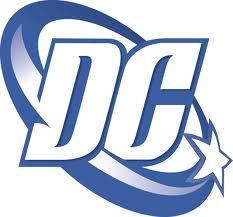

DC Comics, Inc. is one of the largest and most successful companies operating in the market for American comic books and related media. It is the publishing unit of DC Entertainment, a company of Warner Bros. Entertainment, which itself is owned by Time Warner. DC Comics produces material featuring a large number of well-known characters, including Superman, Batman, Wonder Woman, Green Lantern, the Flash, Aquaman, Hawkman, and Green Arrow, along with such superhero teams as the Justice League, the Watchmen, and the Teen Titans, as well as antagonists such as the Joker, Lex Luthor and Catwoman. The initials "DC" came from the company's popular series Detective Comics, which featured Batman's debut and subsequently became part of the company's name. Originally in Manhattan at 432 Fourth Avenue, the DC Comics offices have been located at 480 and later 575 Lexington Avenue; 909 Third Avenue; 75 Rockefeller Plaza; 666 Fifth Avenue; and 1325 Avenue of the Americas. DC has its headquarters at 1700 Broadway, Midtown Manhattan, New York City, but it was announced in October 2013 that DC Entertainment would relocate its headquarters from New York to Los Angeles in 2015 (Burbank specifically). Random House distributes DC Comics' books to the bookstore market, while Diamond Comic Distributors supplies the comics shop specialty market. DC Comics and its major, longtime competitor Marvel Comics (owned by Time Warner's main rival The Walt Disney Company since 2009) together shared over 80% of the American comic-book market in 2008.
A fictional character from the DC Comics and DC Entertainment, Nicknamed as Scarlet Speedster and the "Crimson Comet", is The Flash. All incarnations of the Flash possess "super speed".
The Flash is a name of a fictional comic book superhero from the DC Comics universe. Created by writer Gardner Fox and artist Harry Lampert, the original Flash first appeared in Flash Comics #1 (January 1940)